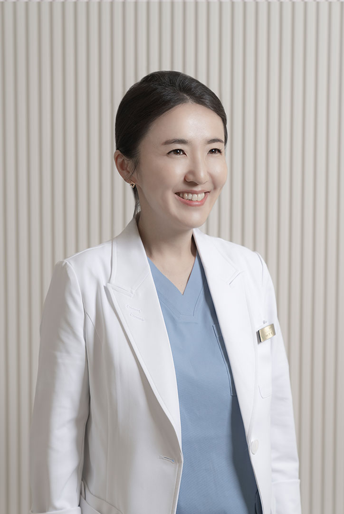

김포밝은안과박혜진 원장
Story
저는 특별한 의사는 아닙니다.
다만, 백내장 수술 병원에서의 다양한 집도 경험과 녹내장 전임의로서 만성 녹내장 환자 치료를 전담하고 여의사, 엄마의사인
덕에 소아환자들을 맡아오면서 소아진료, 드림렌즈에 대한 풍부한 경험을 쌓을 수 있었습니다.
저는 권위 있는 의사는 아닙니다.
그런 저를 믿고 찾아와주시고, 소중한 눈의 치료를 맡기고, 수술을 결정한다는 것이 환자의 입장에서 얼마나 큰 믿음과 신뢰
가 있어야 가능한 일인지 잘 알기에 해를 거듭할수록 감사함과 책임감이 더 커집니다.
신중하게 진료하고 믿음을 드리는 치료를 통해 가족과 지인에게 소개할 수 있는 의사로 남고 싶습니다.
view more